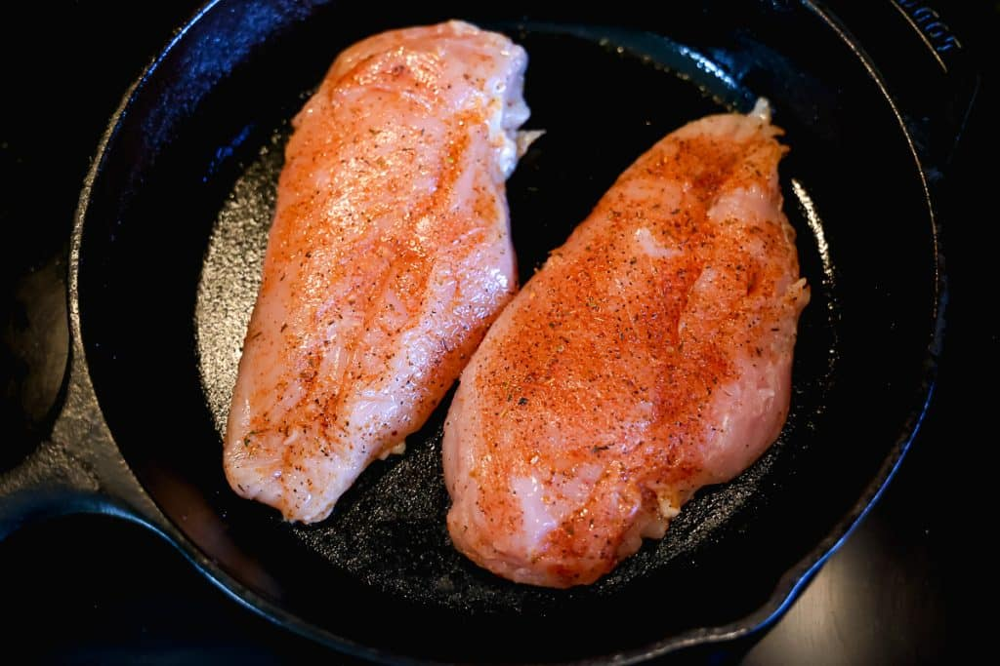
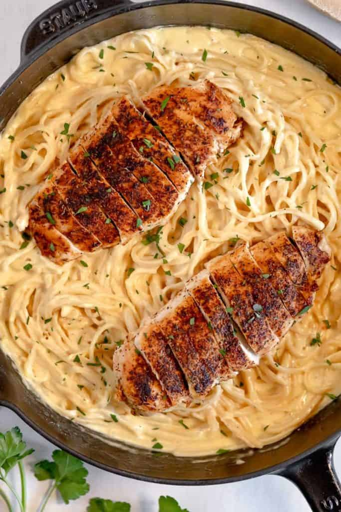
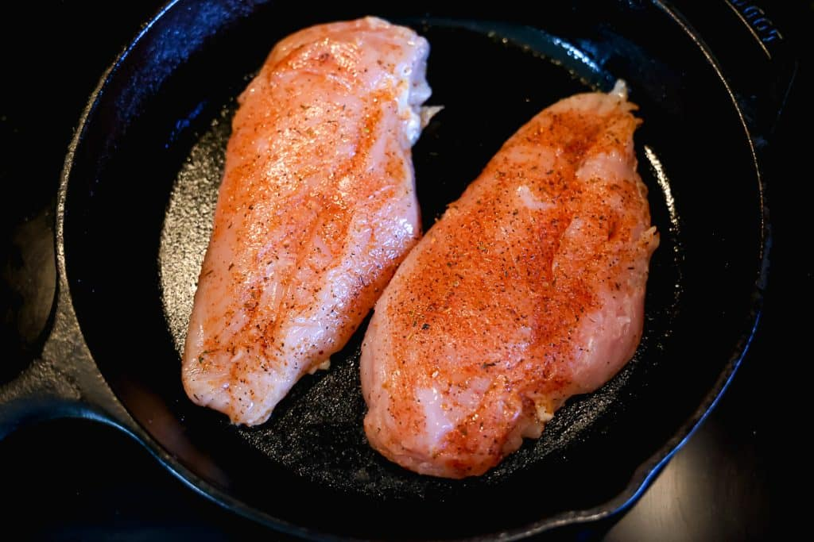
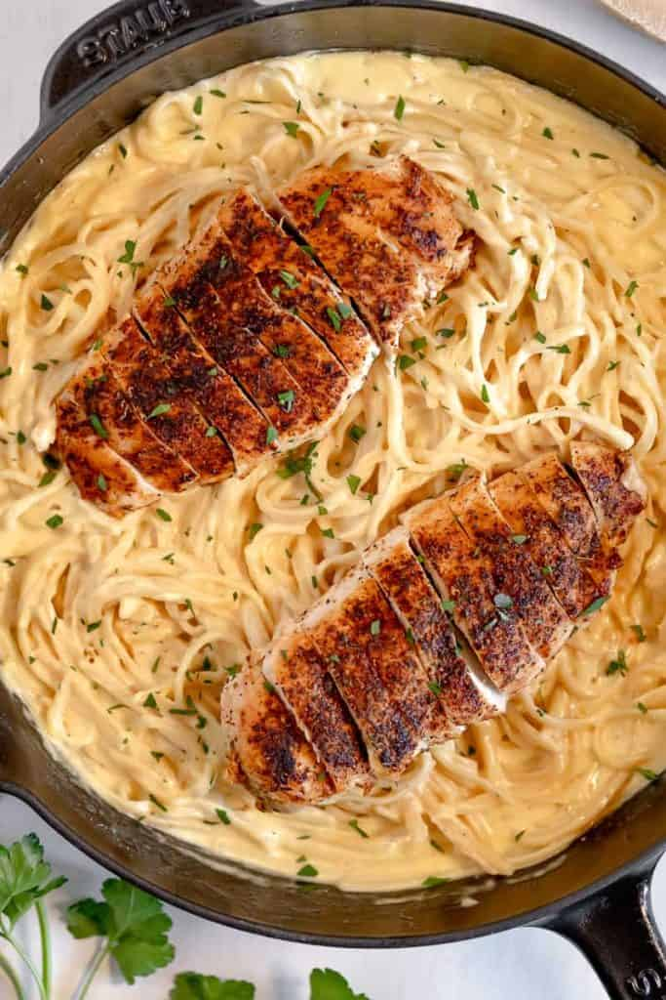

Chicken Alfredo Pasta Recipe
Chicken Alfredo is a great dish to learn to cook. It's not very difficult and can be cooked in bulk and used as a prep meal.
It's one of the most common types of pastas cooked and has multiple different version such as shrimp alfredo or salmon alfredo.
It also doesn't can be cooked in timely manner making it a great family or last minute meal.
Ingredients
-
2 tbsp. extra-virgin olive oil
-
2 boneless skinless chicken breast
-
Kosher salt
-
Freshly ground black pepper
-
1 1/2 c. whole milk
-
1 1/2 c. low-sodium chicken broth
-
2 cloves garlic, minced
-
8 oz. fettuccine
-
1/2 c. heavy cream
-
1 c. freshly grated Parmesan
-
Freshly chopped parsley, for garnish
Directions
-
Step 1
-
In a large skillet over medium-high heat, heat oil. Add chicken and season with salt and pepper.
Cook until golden and cooked through, 8 minutes per side. Let rest 10 minutes, then slice.
-
Step 2
-
Add milk, broth, and garlic to skillet. Season with salt and pepper and bring to a simmer.
Add fettuccine, stirring frequently for about 3 minutes. Let cook until al dente, 8 minutes more.
-
Step 3
-
Stir in heavy cream and Parmesan until combined. Simmer until sauce thickens.
-
Step 4
-
Remove from heat and stir in sliced chicken. Garnish with parsley.
 



Source Attribution: https://www.delish.com/cooking/recipe-ideas/a53695/one-pot-chicken-alfredo-recipe/
Recipe websites that are good references
- How To Make Donuts
- I like the light color scheme on this website. I also like the alignment of this website.
- Creamy Steak Fettuccine Recipe
- The font choice is great as its easy on the eyes and works well with the site. I like how the pictures tell you what the final product is supposed to look like.
- Milk Punch Recipe
- The way the information is grouped on the page is useful. It also has a tips section which adds more value to the website.
Non-recipe websites that are good references